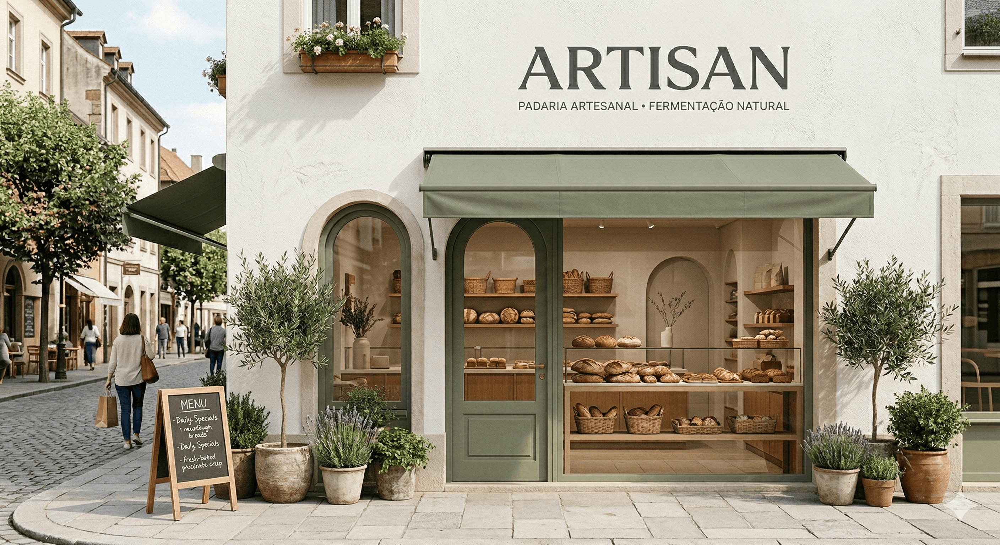
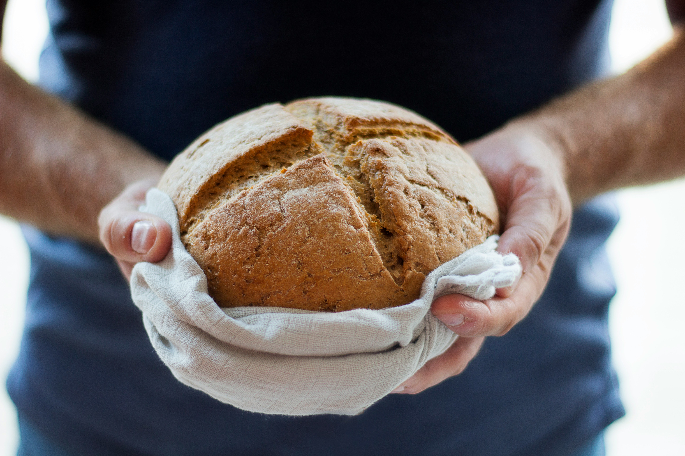

A Artisan é uma padaria especializada em pães artesanais, feita com ingredientes de alta qualidade
e técnicas tradicionais de panificação. Nosso objetivo é oferecer aos nossos clientes uma experiência
única e saborosa, com pães frescos e deliciosos que são feitos com amor e dedicação.

Ingredientes
Trabalhamos com ingredientes frescos, advindos de produtores da região
Temos opções variadas para atender às necessidades de nossos clientes,
temos pães sem lactose, pães integrais e muito mais!
Trigo direto da fazenda para o seu preparo
Muito amor e carinho em cada pão

Água pura, de nossas nascentes exclusivas
Feito com amor e ingredientes selecionados para garantir o melhor sabor e qualidade.
Venha experimentar nossos deliciosos pães e descubra o verdadeiro sabor do pão artesanal!